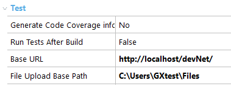
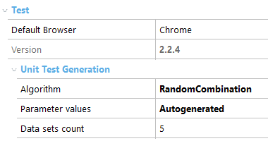

This section documents the test options that can be configured inside the GeneXus IDE, and the behavior of each one. Some test options are specific to an Environment, and others are set per Knowledge Base. Environment Test PropertiesYou need to open the environment preferences to set Test properties on it:  Generate Code Coverage Information: {No, Yes} Run Tests After Build: Boolean Base URL: String (for UI tests only) File Upload Base Path: String (for UI tests only) KB Version Test PropertiesYou need to open the KB Version properties and scroll down to Test group properties on it:  Default Browser: String (for UI tests only) Version: String KB Version Unit Test Generation PropertiesGXtest allows you to determine data, algorithm, and number of sets to be generated for unit tests. Algorithm { RandomCombination, CartesianProduct, Pairwise } Allows choosing the algorithm used to combine input values for every parameter. This will be reflected in the amount and how exhaustive test cases will be. Default: Random combination. Random combination: test cases are built using random values for each parameter Cartesian product: all possible combinations between parameter values are made. The number of test cases will be the product of data values count for every parameter. For instance, if the object has 3 parameters and you input 5 values for each parameter, there will be 5*5*5 test cases: 125. Pairwise combination: You can find information at http://pairwise.org/ Parameter values { Autogenerated, Prompt } This option allows to custom-select data used on test generation, either random (autogenerated) or user-specific (prompt). Default: Autogenerated. Autogenerated: values sets are built using a mix of fixed and random values for every parameter depending on the parameter’s data type. Prompt: Before creating the test, a window is prompted to the user, which enables the user to use specific data. Please refer to this article to understand how to generate different sets of data for tests. Data sets count: Numeric (for Unit tests only) Set how many data sets will be generated in the test DataProvider, after clicking the "Create Unit Test" option. For the Random Combination algorithm only. Default: 5
Note: Also there are other settings (low level) that can be set via GXtest config file |